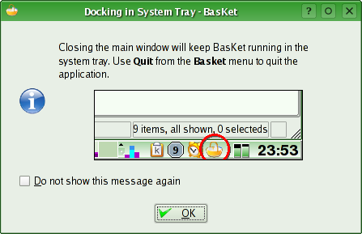
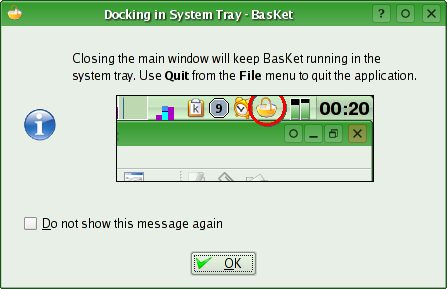
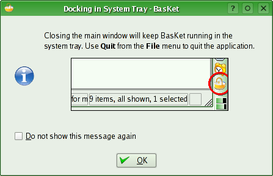
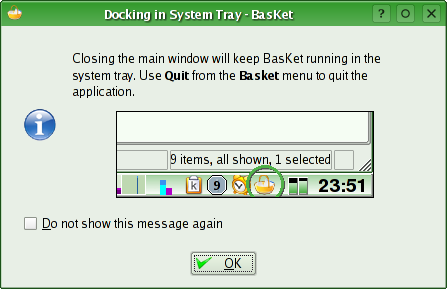

System Tray on Close Info Dialog
This improvement has been asked by the OpenUsability.org usability review.
I tryed to put this thing into KDE libs, but there is one remaining bug: if windows can be behind Kicker, the screenshot take that window and not the kicker icon!
Rational
- For the text: I've got it from JuK and like it because it's consise and relevant. But I used bold instead of surrounding menu items with simple quotes. My rationale is that users don't read the message boxes and have the two items hilighted like this help them to view and memorize the menus where to get the described feature. It also avoid traduction work to match local way of quotting texts.
- For the image: Users (humans generally) are attracted to visual effects. This sort of message box with image is used similiary in the dialog used in Windows XP to configure the Taskbar, in Mozilla and other Windows applications...
And I think it is a very good idea because, one more time, users don't read dialogs (and don't like them). This dialog is important for users to know the application they closed (and perhapse wanted to quit) is a quite special one. If it is pushed to be standard for all KDE applications, on the 2nd systray based application that the user close, he/she will immediatly see that he isn't quitting but minimizing the window. Images are more powerful and recognizable than (unreaded or not) texts: a picture explain all very quickly without have to pay attention in reading..., and users are pleased with.
Moreover, the image I propose (in fact, the solution mentioned in the usability report) is dynamic. Ie. it mirror the real user desktop configuration and he/she can better match it to her screen.
Screenshots
Screenshot of the "on close info dialog" that show a snapshot of the systray that circle the system tray icon. The screenshot is dynamically taken (not a static image), which then show the real user configuration:

The snapshot is taken even if the kicker in on top of the screen:

Or on right (or left):

Some guys proposed to use the current highlight color instead of red. But that color is often nearly the same as windows decoration one (kicker on top) or of the colored kicker... It result less contrast and a circle that can be missed:

Implementation
If you want to integrate this dialog in your application, copy and paste tis code in your project: class KSystemTray2.
It is a class that inherit KSystemTray to extend it and add one method: displayCloseMessage(). Use or extend it instead of KSystemTray, and voilà!